版本、来源与译文说明 · Source & translation notes
Uplifting Table Tennis: A Robust, Real-World Application for 3D Trajectory and Spin EstimationUplifting Table Tennis：面向真实场景的鲁棒三维轨迹与旋转估计系统
Abstract摘要
Obtaining the precise 3D motion of a table tennis ball from standard monocular videos is a challenging problem, as existing methods trained on synthetic data struggle to generalize to the noisy, imperfect ball and table detections of the real world.
从普通单目视频中获取乒乓球的精确三维运动仍然困难：仅用合成数据训练的现有方法，难以适应真实场景中含有噪声且不够完善的球与球台检测结果。
This is primarily due to the inherent lack of 3D ground truth trajectories and spin annotations for real-world video.
这主要是因为真实视频缺少三维轨迹真值和旋转标注。
To overcome this, we propose a novel two-stage pipeline that divides the problem into a front-end perception task and a back-end 2D-to-3D uplifting task.
为此，我们提出一种新的两阶段流程，将问题划分为前端感知和后端二维到三维提升两个任务。
This separation allows us to train the front-end components with abundant 2D supervision from our newly created TTHQ dataset, while the back-end uplifting network is trained exclusively on physically-correct synthetic data.
这样，前端组件可利用新建 TTHQ 数据集中的大量二维监督进行训练；后端提升网络则完全使用符合物理规律的合成数据训练。
We specifically re-engineer the uplifting model to be robust to common real-world artifacts, such as missing detections and varying frame rates.
我们针对三维提升模型重新设计，使其能够稳健应对真实场景中常见的漏检和帧率变化等问题。
By integrating a ball detector and a table keypoint detector, our approach transforms a proof-of-concept uplifting method into a practical, robust, and high-performing end-to-end application for 3D table tennis trajectory and spin analysis.
通过集成球检测器和球台关键点检测器，我们的方法将概念验证提升方法转变为实用、稳健且高性能的端到端应用程序，用于 3D 乒乓球轨迹和旋转分析。
1 Introduction1 简介
Table tennis is a dynamic sport demanding exceptional precision, speed, and strategic thinking.
乒乓球是一项充满活力的运动，需要卓越的精度、速度和战略思维。
For athletes, coaches, and sports scientists, understanding the intricate 3D trajectory and spin of the ball is paramount for in-depth performance analysis and technique refinement.
对于运动员、教练和运动科学家来说，了解球的复杂 3D 轨迹和旋转对于深入的表现分析和技术改进至关重要。
Such detailed insights, however, are notoriously difficult to obtain from conventional broadcast or monocular video footage, which only provides 2D observations.
然而，众所周知，从传统转播或单目视频片段中很难获得如此详细的见解，因为传统转播或单目视频片段仅提供 2D 观察结果。
The rapid motion of the ball, coupled with occlusions, varying lighting conditions, and diverse camera angles, poses significant challenges for accurate 3D reconstruction.
球的快速运动，加上遮挡、变化的照明条件和不同的摄像机角度，给精确的 3D 重建带来了重大挑战。
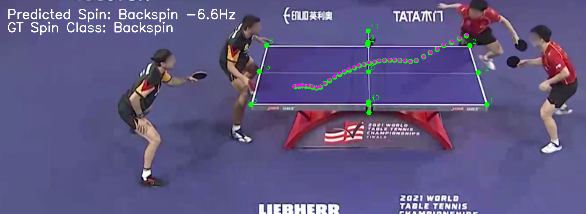
Figure 1 : Qualitative example prediction of the full pipeline for a serve trajectory.
图 1：发球轨迹完整流程的定性示例预测。
The green dots represent the front-end detections for 2D ball positions and table keypoints.
绿点代表 2D 球位置和球台关键点的前端检测。
The magenta dots represent the predicted 3D ball trajectory from the back-end.
洋红色点代表后端预测的 3D 球轨迹。
Prior research has demonstrated the feasibility of training neural networks on synthetically generated data to reconstruct 3D trajectories and spin [ 8 , 31 , 22 ] .
已有研究证明，可以利用合成数据训练神经网络，重建三维轨迹及球的旋转 [8, 31, 22]。
However, a significant gap remains in transitioning these models from clean, synthetic inputs to the noisy, sparse, and imperfect detections found in real-world videos.
然而，在将这些模型从干净的合成输入转变为现实世界视频中的嘈杂、稀疏和不完美的检测方面仍然存在巨大差距。
This discrepancy severely limits their practical deployment.
这种差异严重限制了它们的实际部署。
This paper addresses these limitations by presenting a comprehensive pipeline designed to robustly infer the 3D trajectory and initial spin of a table tennis ball directly from monocular video footage.
本文通过提出一个综合流程来解决这些局限性，该流程旨在直接从单目视频片段中稳健地推断乒乓球的 3D 轨迹和初始旋转。
To the best of our knowledge, this work constitutes the first learning-based application of a complete pipeline for 3D table tennis analysis.
据我们所知，这项工作构成了第一个基于学习的 3D 乒乓球分析完整流程的应用程序。
Our solution is built on a novel two-stage framework that solves the fundamental problem of missing 3D ground truth in real-world broadcast videos.
我们采用一种新的两阶段框架，解决真实转播视频缺乏三维真值这一根本问题。
We achieve this by dividing the problem into a front-end perception stage and a back-end uplifting stage, which allows us to train each component with different, readily available supervision.
具体而言，我们将问题分为前端感知和后端提升两个阶段，使各组件分别使用不同且易于获得的监督信息进行训练。
We also introduce a new dataset, essential for training our models.
我们还引入了一个新的数据集，这对于训练我们的模型至关重要。
Our main contributions are:
我们的主要贡献是：
- •
We develop a state-of-the-art 2D ball detector leveraging the efficient Segformer++ architecture [ 20 ] , specifically optimized for processing high-resolution images.
我们开发了一种最先进的 2D 球检测器，利用高效的 Segformer++ 架构 [20]，专门针对处理高分辨率图像进行了优化。
- •
We introduce a novel 2D table keypoint detector , enabling precise localization of the table boundaries within diverse video frames.
我们引入了一种新颖的 2D 球台关键点检测器，能够在不同视频帧内精确定位球台边界。
These keypoints provide essential contextual information for the 2D-to-3D uplifting model.
这些关键点为 2D 到 3D 提升模型提供了必要的上下文信息。
- •
We present a 2D-to-3D uplifting model that takes the detected 2D ball trajectory and table keypoints as input, outputting the 3D trajectory and initial spin of the ball.
我们提出了一个 2D 到 3D 的提升模型，以检测到的 2D 球轨迹和球台关键点作为输入，输出 3D 轨迹和球的初始旋转。
Even though the model is solely trained on physically-correct synthetic data, it achieves zero-shot generalization to real-world scenarios.
尽管模型完全采用符合物理规律的合成数据训练，仍能零样本泛化到真实场景。
We specifically adapt this model to robustly handle real-world detection noise, missing detections, and varying frame rates, making it compatible with our presented detectors.
我们专门调整了该模型，以稳健地处理现实世界的检测噪声、漏检和变化的帧速率，使其与我们提出的检测器兼容。
- •
We introduce the TTHQ dataset , a novel high-quality, high-resolution dataset featuring meticulously annotated 2D ball trajectories, annotated table keypoints, spin information, and comprehensive meta information, all sourced from publicly available YouTube videos.
我们构建了 TTHQ 数据集，这是一个高质量、高分辨率的新数据集，包含精细标注的二维球轨迹、球台关键点、旋转信息及完整的元信息，数据均来自公开的 YouTube 视频。
This dataset is instrumental for training and evaluating our 2D detectors and for benchmarking the integrated pipeline.
该数据集有助于训练和评估我们的 2D 检测器以及对集成流程进行基准测试。
2 Related Work2 相关工作
Ball and Table Keypoint Detection General object detectors [ 32 , 34 , 4 ] can be adapted for ball detection, but heatmap-based methods, common in 2D pose estimation [ 42 , 29 , 25 , 44 ] , have become the de facto standard for ball detection.
球和球台关键点检测一般物体检测器[32,34,4]可以适用于球检测，但是基于热图的方法（常见于2D姿态估计[42,29,25,44]）已经成为球检测的事实标准。
The TrackNet model family [ 19 , 38 , 6 ] and the state-of-the-art WASB [ 39 ] , demonstrate strong performance.
TrackNet 模型系列 [19,38,6] 和最先进的 WASB [39] 展示了强大的性能。
In addition to the ball position, we also want to detect specific table keypoints in the image, which is also sometimes performed for camera calibration in sports analytics [ 35 , 16 , 26 ] .
除了球的位置之外，我们还希望检测图像中的特定球台关键点，这有时也用于运动分析中的相机标定[35,16,26]。
However, existing methods in table tennis [ 15 , 10 ] often lack the precision and comprehensive set of points required for direct integration into our pipeline.
然而，乒乓球领域的现有方法 [15, 10] 通常缺乏直接集成到我们的流程中所需的精度和全面的点集。
We address these limitations by leveraging the Segformer++ architecture [ 20 ] .
我们通过利用 Segformer++ 架构来解决这些限制 [20]。
This modern, transformer-based approach is uniquely suited for our task due to its efficiency in processing high-resolution images , which is crucial for capturing tiny ball details and thin table edges.
这种基于 Transformer 的方法能够高效处理高分辨率图像，适合捕捉微小的球和细窄的球台边缘。
It is trained using a heatmap-based approach, which proves exceptionally effective for precise ball localization. 3D Trajectory and Spin Estimation Reconstructing 3D trajectories from monocular video is challenging.
它使用基于热图的方法进行训练，事实证明该方法对于精确的球定位非常有效。 3D 轨迹和旋转估计从单目视频重建 3D 轨迹具有挑战性。
While controlled multi-camera setups offer high accuracy via triangulation [ 27 , 30 , 33 , 43 ] , they are impractical for broadcast footage.
虽然受控的多摄像机设置通过三角测量提供高精度[27、30、33、43]，但它们对于转播镜头来说是不切实际的。
Monocular methods often rely on physics-based model fitting to observed 2D trajectories [ 24 , 18 , 5 , 15 , 10 ] or single-frame estimates using cues like observed ball size or height [ 41 , 2 , 21 , 3 ] , but these approaches are susceptible to errors from inaccurate identification of key events, explicit camera calibration or insufficient video quality.
单目方法通常依赖于基于物理的模型拟合观察到的 2D 轨迹 [24, 18, 5, 15, 10] 或使用观察到的球大小或高度 [41, 2, 21, 3] 等线索进行单帧估计，但这些方法很容易因关键事件识别不准确、显式相机标定或视频质量不足而产生错误。
The use of deep learning has shown great promise in overcoming these issues by directly predicting 3D trajectories [ 8 , 31 ] .
深度学习的使用在通过直接预测 3D 轨迹来克服这些问题方面显示出了巨大的希望 [8, 31]。
Especially the work of Kienzle et al. [ 22 ] is of great importance for this paper, demonstrating that a network trained only on synthetic data can achieve zero-shot generalization to real-world footage.
尤其是 Kienzle 等人的工作。 [22]对于本文非常重要，它证明了仅在合成数据上训练的网络可以实现对现实世界镜头的零样本泛化。
However, this is only a proof-of-concept, not considering the front-end detection task and, thus, lacking the necessary robustness for a practical application.
然而，这只是一个概念验证，没有考虑前端检测任务，因此缺乏实际应用所需的鲁棒性。
Their approach is not designed to handle real-world imperfections such as imperfect 2D detector outputs, missing detections due to occlusions, and varying video frame rates.
他们的方法并不是为了处理现实世界的缺陷而设计的，例如不完美的 2D 检测器输出、由于遮挡而导致的检测缺失以及不同的视频帧速率。
Our work directly addresses this gap.
我们的工作直接解决了这一差距。
We re-engineer and adapt this foundational uplifting model to function with imperfect real-world inputs and integrate it into a complete application pipeline.
我们重新设计并调整这个基础的提升模型，以适应不完美的现实世界输入，并将其集成到完整的应用程序流程中。
We also expand the synthetic training dataset to include a wider range of match situations, such as serves and faults, which is essential for building a truly useful application.
我们还扩展了合成训练数据集，以包含更广泛的比赛情况，例如发球和失误，这对于构建真正有用的应用程序至关重要。
Estimating ball spin is equally vital for player analysis but remains a significant challenge due to its indirect observability.
估计球旋转对于球员分析同样重要，但由于其间接可观察性，仍然是一个重大挑战。
Existing solutions often rely on specialized hardware such as event cameras [ 12 , 28 ] or high-speed cameras [ 14 ] .
现有的解决方案通常依赖于专用硬件，例如事件摄像机 [12, 28] 或高速摄像机 [14]。
To our knowledge, [ 22 ] introduced the first straightforward learning-based method to estimate ball spin from standard monocular video.
据我们所知，[22]引入了第一个基于学习的直接方法来从标准单目视频中估计球旋转。
Building upon this, we further adapt and improve this spin estimation capability, integrating it robustly within our pipeline.
在此基础上，我们进一步调整和改进了这种旋转估计能力，将其稳健地集成到我们的流程中。
Datasets Robust applications are highly dependent on high-quality datasets.
数据集 健壮的应用程序高度依赖于高质量的数据集。
Existing table tennis datasets like TTST [ 22 ] and Blurball [ 13 ] have been instrumental in previous research, but they lack the necessary scale, resolution, or annotation diversity to train and validate a complete, robust pipeline.
现有的乒乓球数据集（如 TTST [22] 和 Blurball [13]）在之前的研究中发挥了重要作用，但它们缺乏必要的规模、分辨率或标注多样性来训练和验证完整、稳健的流程。
To solve this, we introduce the TTHQ dataset .
为了解决这个问题，我们引入了 TTHQ 数据集。
This is the first comprehensive, high-resolution dataset sourced from real-world broadcast footage that provides all the necessary annotations - 2D ball positions, table keypoints, and spin labels - in sufficient quantity to train and evaluate an end-to-end pipeline.
这是第一个源自真实世界转播镜头的全面、高分辨率数据集，它提供了所有必要的标注 - 2D 球位置、球台关键点和旋转标签 - 数量足以训练和评估端到端流程。
This new dataset is a crucial contribution that will enable future research in this domain.
这个新数据集是一个重要的贡献，它将促进该领域的未来研究。
3 Method3 方法
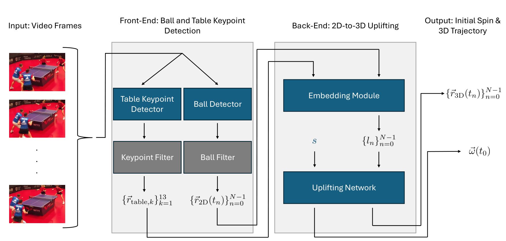
Figure 2 : Overview of the proposed pipeline.
图 2：拟议流程概述。
In the front-end stage , we detect the 2D ball position and localize the 13 table keypoints in each frame at time .
在前端阶段，我们检测2D球的位置，并在时刻定位每帧的13个球台关键点。
After robust filtering, we obtain a clean 2D ball trajectory with being the number of frames in the trajectory.
经过鲁棒筛选，我们得到了干净的二维球轨迹，是轨迹中的帧数。
As we assume a static camera, we obtain a single, time-independent set of table keypoints after filtering.
当我们假设一个静态相机时，我们在筛选后获得一组与时间无关的球台关键点。
In the back-end stage , the coordinates are embedded into a location token for each timestep , a learnable spin token is prepended, and the sequence is then processed by the uplifting network to predict the 3D trajectory and the initial spin .
在后端阶段，坐标被嵌入到每个时间步的位置 token中，前置一个可学习的旋转 token，然后由提升网络处理该序列以预测3D轨迹和初始旋转。
The blue color represents modules with learnable parameters.
蓝色代表具有可学习参数的模块。
3.1 General Overview3.1 总体概述
The lack of 3D supervision in real-world broadcast videos presents a major challenge for learning the ball’s 3D trajectory and spin.
现实世界的转播视频中缺乏 3D 监督，这给学习球的 3D 轨迹和旋转带来了重大挑战。
We overcome this core problem by proposing a complete, end-to-end pipeline that divides the task into two distinct stages, each solvable with available supervision.
我们通过提出一个完整的端到端流程来克服这个核心问题，该流程将任务分为两个不同的阶段，每个阶段都可以通过可用的监督来解决。
An overview of our method is given in Figure 2 .
图 2 给出了我们方法的概述。
The process begins with the front-end stage , which handles the perception and data extraction.
该过程从前端阶段开始，处理感知和数据提取。
Our robust 2D ball detection module is applied to each frame at time , identifying the ball’s 2D position .
我们强大的 2D 球检测模块在时间应用于每个帧，识别球的 2D 位置。
This process yields a sequence of 2D ball detections given by with being the number of frames in the trajectory.
此过程产生由给出的二维球检测序列，其中是轨迹中的帧数。
Concurrently, the 2D table keypoint detection module localizes the 13 characteristic table points in each frame.
同时，2D球台关键点检测模块定位每帧中的13个特征球台点。
To enhance accuracy and stability against detection noise, we apply effective filtering techniques to remove erroneous detections.
为提高检测结果的准确性和对噪声的稳定性，我们采用有效的筛选方法剔除错误检测。
Moreover, as the camera in table tennis is usually static, we merge the table keypoint detections over time to obtain a single, high-quality set of table keypoints for the entire trajectory.
此外，由于乒乓球运动中的摄像机通常是静态的，因此我们随着时间的推移合并球台关键点检测，以获得整个轨迹的单个高质量球台关键点集。
In the subsequent back-end stage , this processed 2D data is fed into our 2D-to-3D uplifting network.
在随后的后端阶段，处理后的 2D 数据将被输入到我们的 2D 到 3D 提升网络中。
The network takes the 2D ball trajectory and the table keypoints as input to predict the initial spin and the full 3D trajectory in metric world coordinates.
该网络以 2D 球轨迹和球台关键点作为输入来预测具有真实尺度的世界坐标中的初始旋转和完整 3D 轨迹。
This modular approach is central to our solution: we train the front-end components on our newly created TTHQ dataset, which provides extensive manually-annotated 2D supervision, while the back-end uplifting network is trained solely on synthetic data, similar to [ 22 ] .
这种模块化方法是我们解决方案的核心：我们在新创建的 TTHQ 数据集上训练前端组件，该数据集提供了广泛的手动标注的 2D 监督，而后端提升网络仅在合成数据上进行训练，类似于 [22]。
This deliberate separation into two stages solves the problem of missing 3D ground truth for real-world videos, making our complete system a practical application.
这种特意分成两个阶段的方式解决了真实世界视频缺少 3D 真值的问题，使我们的完整系统成为实际应用。
3.2 Ball Detection3.2 球检测
Precise 2D ball detection is a crucial prerequisite for accurate 3D trajectory reconstruction.
精确的 2D 球检测是精确 3D 轨迹重建的关键先决条件。
This task is particularly challenging due to the ball’s tiny size, high speed, and susceptibility to motion blur and occlusions.
由于球尺寸小、速度高且容易出现运动模糊和遮挡，因此这项任务特别具有挑战性。
To address these challenges, we require a model that is both computationally efficient for high-resolution imagery and robust to these visual artifacts.
为此，模型需要能高效处理高分辨率图像，并对运动模糊和遮挡等干扰保持鲁棒性。
While existing methods like WASB [ 39 ] use the HRNet architecture [ 37 ] , which is effective but computationally expensive, we instead adopt the more efficient Segformer++ architecture [ 20 ] .
虽然 WASB [39] 等现有方法使用 HRNet 架构 [37]，该架构有效但计算成本较高，但我们采用更高效的 Segformer++ 架构 [20]。
This transformer-based model leverages token merging [ 1 ] to reduce computational cost, enabling us to process high-resolution inputs, which are essential to prevent the ball from vanishing due to downsampling.
这一基于 Transformer 的模型利用 token 合并 [1] 降低计算开销，从而支持高分辨率输入，避免微小的球在下采样后消失。
To provide the network with vital temporal context for challenging cases like motion blur and occlusions, we take three consecutive images of height and width as input.
为应对运动模糊和遮挡，我们将连续 3 帧图像作为输入，以提供必要的时间上下文。每帧图像的高度为 、宽度为 。
These images are concatenated along the channel dimension to form a 9-channel tensor .
这些图像沿着通道维度连接起来形成一个 9 通道张量。
The network then outputs a heatmap where each pixel value indicates the confidence of the ball’s presence in the central frame.
然后，网络输出一个热图，其中每个像素值表示球在中心帧中存在的置信度。
We obtain the 2D ball position by first locating the pixel with the highest confidence and then refining its position by fitting a 2D Gaussian to the local neighborhood.
我们首先定位置信度最高的像素，然后通过将 2D 高斯拟合到局部邻域来细化其位置，从而获得 2D 球位置。
Sequentially applying this network to each triple of input frames yields a complete sequence of 2D ball detections given by .
依次将该网络应用于输入帧的每个三元组，生成由给出的完整的 2D 球检测序列。
To ensure a clean trajectory, which is crucial for the subsequent uplifting, we present a robust filtering technique to mitigate the impact of false detections and occlusions.
为了确保干净的轨迹（这对于后续的提升至关重要），我们提出了一种强大的筛选技术来减轻错误检测和遮挡的影响。
Even highly performant models sometimes detect sporadic false positives, such as a player’s feet or paddle, or yield unreliable predictions during occlusions.
即使高性能的模型有时也会检测到零星的误报，例如球员的脚或球拍，或者在遮挡期间产生不可靠的预测。
Common temporal filtering techniques are insufficient for this task, as false positives often occur for multiple consecutive frames, e.g. tracking the paddle movement and leading to wrong trajectories.
常见的时间筛选技术不足以完成此任务，因为多个连续帧经常出现误报，例如跟踪球拍的运动并导致错误的轨迹。
To address this, we utilize an auxiliary model based on the HRNet architecture.
为了解决这个问题，我们利用基于 HRNet 架构的辅助模型。
Since the two architectures tend to make different types of errors, we leverage their disagreement to filter out erroneous predictions.
由于这两种架构往往会犯不同类型的错误，因此我们利用它们的分歧来筛选掉错误的预测。
A detection is only considered valid if both models’ predictions are in close agreement.
仅当两个模型的预测非常一致时，检测才被视为有效。
If the models agree, we keep the Segformer++ prediction due to its high accuracy.
如果模型一致，我们会保留 Segformer++ 预测，因为它的准确性很高。
In cases where the models disagree, we simply discard the detection.
如果模型不一致，我们只需放弃检测即可。
This simple yet effective filtering step removes nearly all false positives, providing a highly reliable, albeit potentially incomplete, 2D trajectory that is essential for the stable performance of our back-end uplifting network.
这个简单而有效的筛选步骤消除了几乎所有误报，提供了高度可靠（尽管可能不完整）的 2D 轨迹，这对于我们后端提升网络的稳定性能至关重要。
We provide visualizations of the filtering in Figure 7 of the supplementary material.
我们在补充材料的图 7 中提供了筛选的可视化。
3.3 Table Keypoint Detection3.3 球台关键点检测
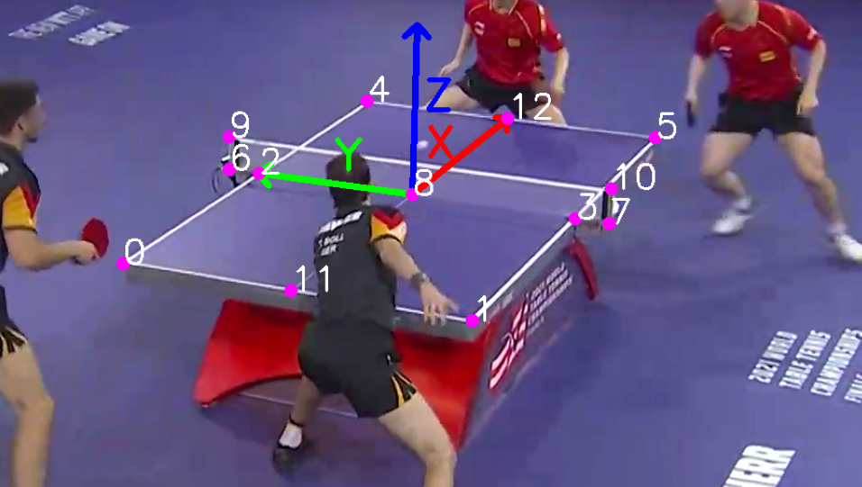
Figure 3 : Definition of the 13 Table Keypoints and illustration of the world coordinate system axes.
图 3：13 个球台关键点的定义和世界坐标系轴的图示。
The table keypoints are a critical input for our uplifting model as they provide a stable spatial reference, enabling the network to understand the camera’s perspective and the ball’s position relative to the table.
球台关键点是我们提升模型的关键输入，因为它们提供了稳定的空间参考，使网络能够理解相机的视角和球相对于球台的位置。
This approach bypasses the need for explicit camera calibration, which is often a source of error and complexity in other methods.
这种方法绕过了显式相机标定的需要，这通常是其他方法中的错误和复杂性的根源。
We detect 13 characteristic keypoints, including the four corners, midpoints of each side, and key points along the net.
我们检测了 13 个特征关键点，包括四个角、每条边的中点以及沿网的关键点。
These keypoints are illustrated in Figure 3 .
这些要点如图 3 所示。
Similar to our ball detection module, we employ the Segformer++ architecture [ 20 ] for this task.
与我们的球检测模块类似，我们采用 Segformer++ 架构 [20] 来完成此任务。
However, since the table is static, we use a single frame instead of a sequence of 3 frames as input, which is sufficient to capture the required spatial information.
球台位置固定，因此输入单帧图像便足以提取所需空间信息，无需使用连续 3 帧。
The network outputs a heatmap for each of the 13 keypoints, from which we extract their 2D positions using the same Gaussian-fitting approach as for ball detection.
网络为 13 个关键点中的每一个输出一个热图，我们使用与球检测相同的高斯拟合方法从中提取它们的 2D 位置。
Since the different table corners and edges can appear visually similar, the global context of the entire table is essential for accurate keypoint identification, thus, the global receptive field of the Segformer++ architecture is particularly beneficial for this task.
由于不同的球台角和边缘在视觉上看起来相似，整个球台的全局上下文对于准确的关键点识别至关重要，因此，Segformer++架构的全局感受野对于这项任务特别有利。
Despite the table’s characteristic appearance, detecting its keypoints is challenging due to frequent occlusions by players, paddles, or the ball itself.
尽管球台具有独特的外观，但由于球员、球拍或球本身的频繁遮挡，检测其关键点具有挑战性。
We assume a static camera setup during each trajectory, which is standard in table tennis broadcasts, allowing us to aggregate keypoint detections over time to obtain a highly reliable set of keypoints.
我们假设每条轨迹对应的拍摄过程中相机保持静止，这也是乒乓球转播中的常见设置。由此可沿时间聚合关键点检测结果，得到可靠性很高的一组关键点。
We implement a two-step filtering process.
我们实施两步筛选过程。
First, we use a cross-architectural filtering technique similar to the one described in Section 3.2 .
首先，我们使用类似于 3.2 节中描述的跨架构筛选技术。
We train an auxiliary model based on the HRNet architecture, and compare its predictions with the Segformer++ model.
我们训练基于 HRNet 架构的辅助模型，并将其预测与 Segformer++ 模型进行比较。
Since these models have different failure modes, detections are only considered valid if the two models are in close agreement.
由于这些模型具有不同的故障模式，因此只有当两个模型非常一致时才认为检测有效。
Second, we implement a temporal clustering approach to aggregate and refine detections over the entire trajectory.
其次，我们实现了一种时间聚类方法来聚合和细化整个轨迹上的检测。
As some keypoints may be occluded for extended periods, frequently for more than 50% of the trajectory duration, we cannot rely on simple temporal smoothing techniques.
由于某些关键点可能会被遮挡很长一段时间，通常会超过轨迹持续时间的 50%，因此我们不能依赖简单的时间平滑技术。
Therefore, we cluster the valid detections over time for each keypoint using DBSCAN [ 9 ] .
因此，我们使用 DBSCAN [9] 对每个关键点随时间的有效检测进行聚类。
The center of the largest cluster is taken as the final, robust keypoint position.
最大簇的中心被视为最终的、鲁棒的关键点位置。
If no cluster is found, the keypoint is considered undetectable for the given video.
如果未找到簇，则认为给定视频的关键点无法检测到。
Consequently, after this robust filtering, we obtain a single time-independent, high-quality set of table keypoints for the trajectory.
因此，经过这种稳健的筛选，我们获得了轨迹的一组独立于时间的高质量球台关键点。
An illustration of this filtering is provided in Figure 8 of the supplementary material.
补充材料的图 8 中提供了这种筛选的说明。
3.4 2D-to-3D Uplifting3.4 2D转3D提升
The back-end stage of our pipeline, which performs the 2D-to-3D uplifting, is the central component responsible for reconstructing the 3D data from our front-end 2D detections.
我们流程的后端阶段执行 2D 到 3D 提升，是负责根据前端 2D 检测重建 3D 数据的核心组件。
It is designed to be trained solely on synthetic data, which provides perfect 3D ground truth for supervision, thus solving the problem of missing real-world 3D labels.
它被设计为仅在合成数据上进行训练，为监督提供完美的 3D 真值，从而解决丢失真实世界 3D 标签的问题。
We build upon the method from Kienzle et al. [ 22 ] , which demonstrates that a network trained on synthetic data can generalize to real-world scenarios.
我们以 Kienzle 等人的方法为基础。 [22]，这表明经过合成数据训练的网络可以推广到现实世界的场景。
Given a 2D ball trajectory and the table keypoints, the model predicts the 3D trajectory and initial spin of the ball.
给定 2D 球轨迹和球台关键点，该模型可以预测球的 3D 轨迹和初始旋转。
Since they do not consider the front-end detection task, their approach handles manually-annotated 2D inputs, which are perfect and complete.
由于他们不考虑前端检测任务，因此他们的方法处理手动标注的 2D 输入，这是完美且完整的。
This is a significant limitation for practical applications, as real-world detections are often imperfect and incomplete due to occlusions and detection errors.
这对于实际应用来说是一个重大限制，因为现实世界的检测通常由于遮挡和检测错误而不完美和不完整。
Therefore, we make three key architectural modifications to extend this foundation into a robust, practical application.
因此，我们进行了三项关键的架构修改，以将此基础扩展为强大的实际应用程序。
Robustness to Missing Detections Our front-end filtering can result in missing detections due to occlusions or false positives.
对漏检的鲁棒性我们的前端筛选可能会由于遮挡或误报而导致检测丢失。
To handle this naturally, we make use of the network’s transformer-based architecture.
为了自然地处理这个问题，我们利用网络基于Transformer的架构。
The attention mechanism of the transformer allows it to process a sequence of inputs of varying lengths, so we can simply remove the filtered-out ball detections and the network can still process the remaining tokens.
Transformer的注意力机制允许它处理一系列不同长度的输入，因此我们可以简单地删除筛选掉的球检测，并且网络仍然可以处理剩余的标记。
However, the time information between consecutive detections is crucial for accurate trajectory and spin estimation.
然而，连续检测之间的时间信息对于准确的轨迹和旋转估计至关重要。
Therefore, we employ a custom Rotary Positional Embedding (RoPE) [ 36 ] which encodes the exact time stamps of each detection, as described in more detail below.
因此，我们采用自定义旋转位置编码（RoPE）[36]，它对每次检测的确切时间戳进行编码，如下文更详细地描述。
Consequently, the network can naturally understand the time difference between consecutive detections, even when some are missing.
因此，网络自然可以理解连续检测之间的时间差，即使某些检测丢失。
To bridge the gap between training on synthetic data and applying it to real-world scenarios, we simulate missing ball detections during training, increasing the network’s robustness against these common failure cases.
为了弥合合成数据训练与将其应用于现实场景之间的差距，我们在训练期间模拟球漏检，从而提高网络针对这些常见故障情况的鲁棒性。
Similarly, we encode the table keypoints using a custom transformer-based embedding module, which allows us to handle varying numbers of visible keypoints, e.g. due to occlusions.
类似地，我们用自行设计的、基于 Transformer 的嵌入模块编码球台关键点，以适应可见关键点数量的变化，例如遮挡造成的数量变化。
We also randomly drop keypoints during training to improve robustness to missing keypoint detections.
我们还在训练期间随机删除关键点，以提高对丢失关键点检测的鲁棒性。
Handling of Varying Frame Rates Unlike prior work, our system must handle videos with a wide range of frame rates.
处理不同的帧速率与以前的工作不同，我们的系统必须处理具有广泛帧速率的视频。
To enable the network to understand the time difference between consecutive detections, we use a custom Rotary Positional Embedding (RoPE) [ 36 ] .
为了使网络能够理解连续检测之间的时间差，我们使用自定义旋转位置编码（RoPE）[36]。
Instead of applying a fixed rotation for each position in the input sequence, we rotate each token proportionally to its exact time stamp .
我们按每次检测的准确时间戳 ，成比例地旋转对应 token，而非仅根据其在输入序列中的位置施加固定旋转。
This naturally encodes the time information into the attention mechanism.
这自然地将时间信息编码到注意力机制中。
Further details are provided in Section B of the supplementary material.
补充材料的 B 部分提供了更多详细信息。
We randomly sample frame rates during training to improve robustness at test time.
我们在训练期间随机采样帧速率，以提高测试时的鲁棒性。
Network Architecture and Data Flow Our back-end pipeline begins with an embedding module consisting of transformer blocks as illustrated in Figure 4 .
网络架构和数据流 我们的后端流程始于一个嵌入模块，该模块由Transformer块组成，如图 4 所示。
We designed this module to process the embedded 2D ball position at time and all visible table keypoints as input.
该模块接收时间 处球的二维位置 及所有可见球台关键点的嵌入表示。
The transformer blocks distill the context from the keypoints into a single location token for each ball detection.
对于每个球检测，Transformer块将关键点的上下文提取为单个位置 token。
By calculating an embedding for each detection and prepending a learnable spin token to the sequence of location tokens , we obtain the final input sequence for the uplifting network.
通过计算每个检测的嵌入，并将可学习的旋转 token添加到位置 token序列中，我们获得了提升网络的最终输入序列。
The uplifting network itself is a two-stage transformer as shown in Figure 5 .
提升网络本身是一个两级Transformer，如图5所示。
First, a 2D-to-3D uplifting is performed by transformer blocks, followed by a simple MLP head to compute the 3D trajectory .
首先，通过Transformer块执行2D到3D的提升，然后使用简单的MLP头来计算3D轨迹。
Then, the motion information is distilled into the spin token by additional transformer blocks, followed by another MLP head to predict the initial spin vector .
然后，运动信息通过额外的Transformer块提取到旋转 token中，然后是另一个MLP头来预测初始旋转向量。
This modular design, together with our targeted architectural adaptations, allows our back-end to be exclusively trained on synthetic data and still generalize to real-world footage, effectively solving the challenge of unavailable 3D supervisions.
这种模块化设计，加上我们有针对性的架构调整，使我们的后端能够专门接受合成数据的训练，并仍然推广到现实世界的镜头，有效解决了无法进行 3D 监督的挑战。
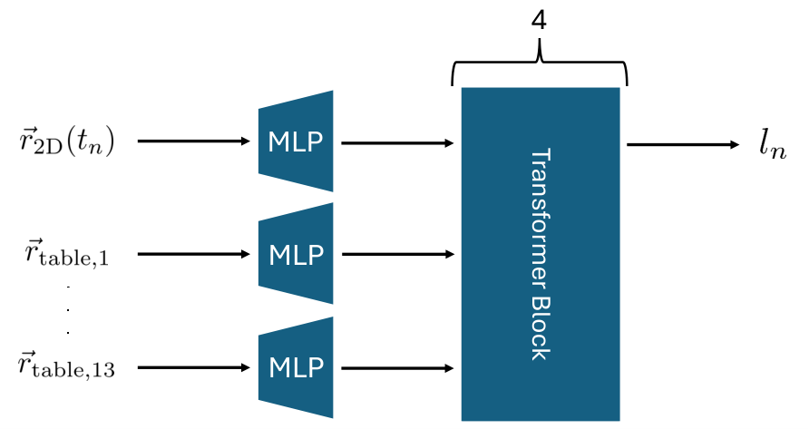
Figure 4 : Embedding Module .
图 4：嵌入模块。
The detected ball position at time and all visible table keypoints are projected into a higher dimensional space by a 2-layer MLP and then processed by a 4-block transformer.
在时间检测到的球位置和所有可见的球台关键点通过2层MLP投影到更高维度的空间，然后由4块Transformer处理。
Finally, only the token corresponding to the ball position is kept as location token .
最后，仅保留与球位置相对应的标记作为位置 token。
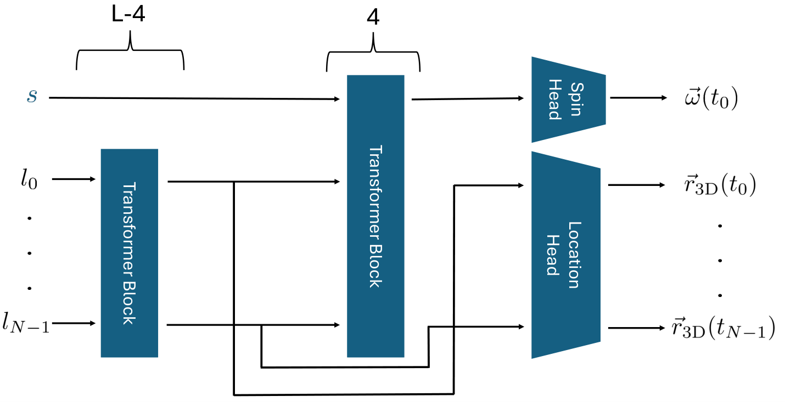
Figure 5 : Uplifting Network .
图 5：三维提升网络。
The input consists of the learnable spin token and the sequence of location tokens obtained from the embedding module.
输入由可学习的旋转 token和从嵌入模块获得的位置 token序列组成。
The first stage consisting of transformer blocks computes the 3D trajectory.
第一阶段由Transformer块组成，计算 3D 轨迹。
The second stage consisting of 4 transformer blocks computes the initial spin.
第二阶段由 4 个Transformer块组成，计算初始旋转。
To obtain the final three-dimensional output vectors, we apply a small 3-layer MLP as head for both the trajectory and the spin.
为了获得最终的三维输出向量，我们应用一个小型 3 层 MLP 作为轨迹和旋转的头。
4 Data and Metrics4 数据和指标
TTHQ Dataset To train and evaluate our method, we introduce the TTHQ (Table Tennis High Quality) dataset, which is created to address the shortcomings of existing datasets for our specific task.
TTHQ 数据集 为了训练和评估我们的方法，我们引入了 TTHQ（乒乓球高质量）数据集，该数据集是为了解决我们特定任务的现有数据集的缺点而创建的。
It consists of high-resolution ( ) broadcast videos of professional, semi-professional, and amateur table tennis matches sourced from YouTube, covering a wide range of conditions, including different camera angles, lighting situations, and player skill levels.
它由来自 YouTube 的职业、半职业和业余乒乓球比赛的高分辨率 ( ) 转播视频组成，涵盖各种条件，包括不同的拍摄角度、照明情况和球员技能水平。
The TTHQ dataset includes videos of individual matches and highlight videos, where a highlight video is a compilation of selected scenes from multiple matches, increasing the diversity of scenarios significantly.
TTHQ数据集包括单场比赛视频和精彩视频，其中精彩视频是多场比赛中选定场景的汇编，显著增加了场景的多样性。
We provide precise 2D annotations for both ball and table keypoint detection modules.
我们为球和球台关键点检测模块提供精确的 2D 标注。
The 2D ball position is manually annotated in frames, ensuring a diverse set of scenarios with varying ball speeds and motion blur levels.
2D 球位置在帧中手动标注，确保具有不同球速和运动模糊级别的多样化场景。
We also annotate the 13 2D table keypoints in frames, placing special emphasis on highlight videos and scenes with varying levels of occlusion to ensure the network can generalize despite the relatively small number of annotations.
我们还在帧中标注了 13 个 2D 球台关键点，特别强调突出视频和具有不同遮挡程度的场景，以确保网络在标注数量相对较少的情况下也能进行泛化。
For comprehensive evaluation, we designate of the videos for validation and testing.
为了进行综合评估，我们指定的视频进行验证和测试。
For these videos, we also provide binary spin class labels (topspin or backspin) for trajectories, which we annotated similarly to [ 22 ] .
对于这些视频，我们还参照文献 [22] 的方法，为 条轨迹标注了上旋或下旋这两类旋转标签。
This allows us to evaluate the full pipeline’s spin prediction accuracy in a realistic setting.
这使我们能够在现实环境中评估整个流程的旋转预测准确性。
Synthetic Data To train our uplifting network, we generate a large synthetic dataset using the MuJoCo physics engine [ 40 ] .
合成数据为了训练我们的提升网络，我们使用 MuJoCo 物理引擎生成一个大型合成数据集 [40]。
We extend the original training data from [ 22 ] by including a much wider variety of trajectories.
我们通过包含更广泛的轨迹来扩展[22]中的原始训练数据。
This includes trajectories from both sides, along with serves and various fault types.
其中包含从球台两侧出发的轨迹、发球轨迹以及各类失误轨迹。
We also vary the ball’s initial position, velocity, and spin more extensively, and we simulate a wider range of camera parameters to cover more diverse real-world broadcast conditions.
我们还更广泛地改变球的初始位置、速度和旋转，并且模拟更广泛的摄像机参数以覆盖更多样化的现实世界转播条件。
Overall, we generate synthetic trajectories, with over million individual 2D ball positions.
总体而言，我们生成条合成轨迹，其中包含超过百万个单独的 2D 球位置。
Existing Datasets The Blurball dataset [ 13 ] consists of videos and provides annotated frames with 2D ball positions.
现有数据集 Blurball 数据集 [13] 由视频组成，并提供带有 2D 球位置的标注帧。
While the videos are of lower resolution ( ) and quality, we use this dataset for pre-training our ball detection module to bootstrap its learning.
虽然视频的分辨率（）和质量较低，但我们使用此数据集来预训练我们的球检测模块以引导其学习。
The TTST dataset [ 22 ] provides trajectories.
TTST 数据集 [22] 提供轨迹。
The 2D ball position is annotated in frames and the set of 13 table keypoints is annotated once per trajectory.
2D 球位置在帧中进行标注，并且每条轨迹对 13 个球台关键点集进行标注一次。
The trajectories are also annotated with a binary spin label (topspin or backspin).
轨迹还用二元旋转标签（上旋或下旋）进行标注。
We use trajectories for validating the uplifting network.
我们使用轨迹来验证提升网络。
The remaining trajectories are used to test the uplifting network’s performance in a controlled setting.
剩余的轨迹用于在受控设置下测试提升网络的性能。
Metrics For our front-end modules, we use the ACC @ px metric, which measures the percentage of correct detections within a radius of pixels around the ground truth position.
指标 对于我们的前端模块，我们使用 ACC @ px 指标，该指标测量真值位置周围像素半径内正确检测的百分比。
Given that no 3D ground truth data exists for realistic broadcast videos, a direct evaluation of the back-end’s 3D predictions is not possible.
由于不存在真实转播视频的 3D 真值数据，因此无法直接评估后端的 3D 预测。
We overcome this challenge by employing a comprehensive set of metrics that indirectly, but robustly, assess our model’s performance.
我们通过采用一套全面的指标来克服这一挑战，这些指标间接但稳健地评估我们模型的性能。
We first evaluate the quality of the predicted 3D trajectory by projecting it back into the image plane.
我们首先通过将预测的 3D 轨迹投影回图像平面来评估其质量。
The 2D Reprojection Error (2DRE) is then calculated as the average distance between the reprojected 3D positions and the ground truth 2D positions for each trajectory:
然后将 2D 重投影误差 (2DRE) 计算为每个轨迹的重投影 3D 位置与真值 2D 位置之间的平均距离：
|
|
(1) |
where is the camera projection matrix, is the predicted 3D position, is the ground truth 2D position, and is the number of frames in the trajectory.
其中是相机投影矩阵，是预测的3D位置，是真值2D位置，是轨迹中的帧数。
The final reported score is the mean 2DRE (m2DRE) computed over all trajectories.
最终报告的分数是在所有轨迹上计算的平均 2DRE (m2DRE)。
Finally, we evaluate the predicted initial spin using the binary spin annotations in the dataset.
最后，我们使用数据集中的二分类旋转标注来评估预测的初始旋转。
Since it is not possible for humans to visually estimate the full 3D spin vector or reliably estimate the strength of the spin, human annotations are inherently limited to the binary classification of topspin vs. backspin.
由于人类不可能直观地估计完整的 3D 旋转向量或可靠地估计旋转的强度，因此人类标注本质上仅限于上旋与下旋的二元分类。
While our network is trained on synthetic data to predict the full continuous 3D spin vector , we can only evaluate its performance on real-world data by classifying the spin as topspin if the -component of the predicted vector is positive, and as backspin otherwise.
虽然我们的网络接受了合成数据的训练来预测完整的连续 3D 旋转向量，但我们只能通过在预测向量的分量为正时将旋转分类为上旋来评估其在真实世界数据上的性能，否则将其分类为下旋。
We perform this classification using a hard threshold, providing a direct mapping from our continuous prediction to the available ground truth.
我们使用硬阈值执行此分类，提供从连续预测到可用真值的直接映射。
The performance on this binary task provides compelling evidence that the network has successfully learned the underlying full 3D spin vector.
此二元任务的性能提供了令人信服的证据，证明网络已成功学习底层的完整 3D 旋转向量。
We calculate the Accuracy ( ACC ) and the macro F1-Score ( ) to measure the classification performance.
我们计算准确度（ACC）和宏平均 F1-Score（）来衡量分类性能。
5 Experiments5 实验
In this section, we present a systematic evaluation of our proposed components and the complete pipeline across various datasets.
在本节中，我们对我们提出的组件和跨各种数据集的完整流程进行了系统评估。
The structure of this section is designed to validate each of our key architectural choices and demonstrate the real-world efficacy of our full system.
本节的结构旨在验证我们的每个关键架构选择并展示我们整个系统的实际功效。
Implementation and training details can be found in Section A of the supplementary material.
实现和训练详细信息可以在补充材料的 A 部分中找到。
5.1 Ball Detection Evaluation5.1 球检测评估
| Model模型 | #Params#参数 | Input Res.输入分辨率 | FPS FPS | ACC@2px ACC @2px | ACC@5px ACC @5px | ACC@10px ACC @10px |
| Segformer++ (B0)Segformer++ (B0) | ||||||
| Segformer++ (B2)Segformer++ (B2) | ||||||
| WASB (HRNet Small)WASB（HRNet 小型） | ||||||
| VitPose (ViT Small)VitPose（ViT 小） |
Table 1 : Comparison of different architectures for ball detection and results on the TTHQ test set.
表 1：不同球检测架构和 TTHQ 测试集结果的比较。
The input resolution for each model was chosen individually to ensure comparable GPU RAM usage during training and similar inference speeds during testing.
每个模型的输入分辨率都是单独选择的，以确保训练期间具有可比的 GPU RAM 使用率以及测试期间相似的推理速度。
This process allowed us to determine the optimal and maximal input resolution for each architecture.
这个过程使我们能够确定每种架构的最佳和最大输入分辨率。
The inference FPS are calculated on a single V100 GPU with batch size .
推理 FPS 在单个 V100 GPU 上计算，批量大小为。
Our core hypothesis for the front-end is that high-resolution input is paramount for precise ball detection .
我们对前端的核心假设是高分辨率输入对于精确的球检测至关重要。
Because a table tennis ball is a small, fast-moving object, any loss of visual information can be detrimental.
由于乒乓球是一种小型且快速移动的物体，任何视觉信息的丢失都可能是有害的。
We suggest the Segformer++ architecture due to its strong performance and efficiency, which allows us to use very high-resolution inputs.
我们推荐 Segformer++ 架构，因为它兼具良好的性能与效率，支持使用很高分辨率的输入。
To validate this choice, we conduct a comparative evaluation against two distinct architectures: the current state-of-the-art ball detection model WASB based on the HRNet architecture and the popular VitPose architecture for 2D human pose estimation.
为了验证这个选择，我们对两种不同的架构进行了比较评估：当前最先进的基于 HRNet 架构的球检测模型 WASB 和流行的用于 2D 人体姿态估计的 VitPose 架构。
More details about the chosen model parameters are given in Section B of the supplementary material.
补充材料的 B 部分给出了有关所选模型参数的更多详细信息。
The results in Table 1 confirm our hypothesis, as the Segformer++ models outperform the other architectures, especially on the strict ACC @2px metric.
表 1 中的结果证实了我们的假设，因为 Segformer++ 模型优于其他架构，尤其是在严格的 ACC @2px 指标上。
This high precision is vital, as it is a prerequisite for accurate 3D trajectory uplifting.
这种高精度至关重要，因为它是精确 3D 轨迹提升的先决条件。
While the Segformer++ (B2) model achieves superior overall performance, the smaller B0 variant provides a strong balance of accuracy and speed.
虽然 Segformer++ (B2) 模型实现了卓越的整体性能，但较小的 B0 变体提供了准确性和速度的强大平衡。
The CNN-based WASB and transformer-based VitPose models perform worse, which we attribute to their lower effective resolution.
基于 CNN 的 WASB 和基于 Transformer 的 VitPose 模型表现较差，我们将其归因于它们的有效分辨率较低。
This confirms our core belief: the ability to process high-resolution images is paramount for accurate table tennis ball detection.
这证实了我们的核心信念：处理高分辨率图像的能力对于准确的乒乓球检测至关重要。
Based on these results, we select the Segformer++ (B2) model for our final pipeline due to its superior overall performance.
基于这些结果，我们选择 Segformer++ (B2) 模型作为我们的最终流程，因为它具有卓越的整体性能。
5.2 Table Keypoint Detection Evaluation5.2 球台关键点检测评估
| Model模型 | #Params#参数 | Input Res.输入分辨率 | FPS FPS | ACC@2px ACC @2px | ACC@5px ACC @5px | ACC@10px ACC @10px |
| Segformer++ (B0)Segformer++ (B0) | ||||||
| Segformer++ (B2)Segformer++ (B2) | ||||||
| WASB (HRNet Small)WASB（HRNet 小型） | ||||||
| VitPose (ViT Small)VitPose（ViT 小） |
Table 2 : Comparison of different architectures for table keypoint detection and results on the TTHQ test set.
表 2：球台关键点检测的不同架构和 TTHQ 测试集上的结果的比较。
The input resolution for each model was chosen individually to ensure comparable GPU RAM usage during training and similar inference speeds during testing.
每个模型的输入分辨率都是单独选择的，以确保训练期间具有可比的 GPU RAM 使用率以及测试期间相似的推理速度。
This process allowed us to determine the optimal and maximal input resolution for each architecture.
这个过程使我们能够确定每种架构的最佳和最大输入分辨率。
The inference FPS are calculated on a single V100 GPU with batch size .
推理 FPS 在单个 V100 GPU 上计算，批量大小为。
Our second front-end hypothesis is that additionally to the high-resolution capabilities, a global receptive field is crucial for distinguishing table keypoints .
我们的第二个前端假设是，除了高分辨率能力之外，全局感受野对于区分球台关键点也至关重要。
The 13 table keypoints are often visually similar, requiring a model to understand the context within the entire table to accurately identify them.
13 个球台关键点通常在视觉上相似，需要模型了解整个球台内的上下文才能准确识别它们。
This makes a transformer-based architecture with a global receptive field particularly beneficial.
这使得具有全局感受野的基于Transformer的架构特别有益。
We again compare our Segformer++ architecture against the CNN-based WASB and the transformer-based VitPose models.
我们再次将我们的 Segformer++ 架构与基于 CNN 的 WASB 和基于 Transformer 的 VitPose 模型进行比较。
The results, summarized in Table 2 , show that the Segformer++ models significantly outperform the other architectures.
表 2 中总结的结果表明，Segformer++ 模型的性能明显优于其他架构。
This performance gap is more pronounced than in the ball detection task.
这种性能差距比球检测任务更明显。
This provides strong evidence for our hypothesis, suggesting that while high resolution is vital, the global context provided by the transformer backbone is essential for accurately distinguishing between the keypoints.
这为我们的假设提供了强有力的证据，表明虽然高分辨率至关重要，但 Transformer 主干提供的全局上下文对于准确区分关键点至关重要。
Further evidence comes from the improved performance of the VitPose model compared to the ball detection task, even though it still lags behind.
进一步的证据来自 VitPose 模型相对于球检测任务的性能改进，尽管它仍然落后。
Based on these results, we again select the Segformer++ (B2) model for our final pipeline due to its superior performance on the critical ACC @2px metric.
基于这些结果，我们再次选择 Segformer++ (B2) 模型作为我们的最终流程，因为它在关键 ACC @2px 指标上具有卓越的性能。
5.3 Back-End Evaluation5.3 后端评估
| Method方法 | Transforms变换 | Metrics指标 | |||
| Half FPS 半帧率 | Miss. Det. 漏检 | ACC ACC | m2DRE m2DRE | ||
| Kienzle et al. [22]金茨勒等人 [ 22 ] | ✕ | ✕ | |||
| Mixed混合 | |||||
| Ours我们的 | |||||
| Kienzle et al. [22]金茨勒等人 [ 22 ] | ✓ | ✕ | |||
| Mixed混合 | |||||
| Ours我们的 | |||||
| Kienzle et al. [22]金茨勒等人 [ 22 ] | ✕ | ✓ | |||
| Mixed混合 | |||||
| Ours我们的 | |||||
| Kienzle et al. [22]金茨勒等人 [ 22 ] | ✓ | ✓ | |||
| Mixed混合 | |||||
| Ours我们的 | |||||
Table 3 : Ablation study of the back-end on the TTST dataset [ 22 ] .
表3：TTST 数据集后端的消融研究[22]。
We apply two different transformations to the test set to simulate real-world challenges: The Half FPS transformation drops every second frame to simulate a lower frame rate.
我们对测试集施加两种变换来模拟真实场景的困难：帧率减半变换每隔一帧丢弃一帧，以模拟较低帧率。
The Missing Detections transformation randomly removes of the frames to simulate ball detection failures or frame drops.
漏检转换随机删除帧以模拟球检测失败或帧丢失。
Additionally, each table keypoint has a chance of being removed.
此外，每个球台关键点都有几率被删除。
We now turn to the back-end, where our core hypothesis is that our proposed architectural modifications enable the network to handle varying frame rates and missing detections while still maintaining high performance.
现在我们转向后端，我们的核心假设是我们提出的架构修改使网络能够处理不同的帧速率和漏检，同时仍然保持高性能。
As proof, we perform an ablation study with three distinct model variants on the TTST dataset, with results presented in Table 3 .
作为证明，我们在 TTST 数据集上使用三种不同的模型变体进行了消融研究，结果如表 3 所示。
The models we compare are:
我们比较的模型有：
- •
The original architecture from Kienzle et al. [ 22 ] , which uses a different embedding module not designed for missing data and a sequence-based positional embedding that does not encode the exact timing of each frame.
Kienzle 等人的原始架构。 [22]，它使用了一个不同的嵌入模块，该模块不是为丢失数据而设计的，并且基于序列的位置嵌入不编码每个帧的确切时序。
- •
The mixed architecture , which uses our proposed transformer-based embedding module but retains the sequence-based positional encoding.
混合架构，使用我们提出的基于Transformer的嵌入模块，但保留基于序列的位置编码。
- •
Our full architecture , which combines the robust transformer-based embedding module with the time-proportional RoPE.
我们的完整架构将基于Transformer的强大嵌入模块与时间比例 RoPE 相结合。
To test our hypothesis, we augment the TTST test set with two transformations: The Half FPS transformation, which drops every second frame to simulate a lower frame rate.
为了测试我们的假设，我们通过两个转换来增强 TTST 测试集：Half FPS 转换，它每隔一帧丢弃一次以模拟较低的帧速率。
And the Missing Detections transformation, which randomly removes of the frames to simulate ball detection failures or frame drops.
以及漏检变换，随机删除帧以模拟球检测失败或帧丢失。
Additionally, each table keypoint has a chance of being removed to simulate occlusions or table keypoint detection failures.
此外，每个球台关键点都有机会被删除以模拟遮挡或球台关键点检测失败。
The results provide clear evidence for our design choices.
结果为我们的设计选择提供了明确的证据。
On the original, unaugmented TTST data, all architectures perform well.
在原始的、未增强的 TTST 数据上，所有架构都表现良好。
However, when faced with the Half FPS transformation, the spin predictions of Kienzle et al. degrade significantly.
在帧率减半后，Kienzle 等人方法的旋转预测性能显著下降。
The mixed architecture also suffers a notable performance drop in spin accuracy.
混合架构的旋转精度性能也显著下降。
This proves that the exact timing of each frame is crucial for accurate spin prediction, and that our time-proportional RoPE is effective in encoding this information.
这证明了每帧的精确计时对于准确的旋转预测至关重要，并且我们的时间比例 RoPE 可以有效地编码此信息。
When applying the Missing Detections transformation, the predicted trajectories of Kienzle et al. degrade significantly, while the other two architectures maintain high performance.
在施加漏检变换后，Kienzle 等人方法的轨迹预测性能显著下降，而另外两种架构仍保持较好的性能。
This clearly shows that our transformer-based embedding module, which can naturally process sequences of varying lengths, is effective at handling missing data.
这清楚地表明我们基于Transformer的嵌入模块可以自然地处理不同长度的序列，可以有效地处理缺失数据。
Finally, when both transformations are applied, our architecture outperforms the other two in both spin and trajectory metrics, demonstrating its robustness to real-world challenges.
最后，当应用这两种转换时，我们的架构在旋转和轨迹指标方面都优于其他两种，证明了其对现实世界挑战的鲁棒性。
Overall, our proposed architecture performs robustly in all scenarios, yielding high-quality spin and trajectory predictions.
总体而言，我们提出的架构在所有场景中都表现稳健，产生高质量的旋转和轨迹预测。
This validates our design choices and confirms that our method is a practical solution that can handle the complexities of real-world videos.
这验证了我们的设计选择，并确认我们的方法是一种实用的解决方案，可以处理现实世界视频的复杂性。
5.4 Full Pipeline: Combining Front- and Back-End5.4 全流程：前后端结合
| Dataset数据集 | Table: m2DRE 球台：m2DRE | Ball: m2DRE 球：m2DRE | Spin: ACC 旋转：ACC | Spin: 旋转： |
| TTHQTTHQ | ||||
| TTSTTTST |
Table 4 : Results of the full pipeline on the TTHQ and TTST datasets.
表 4：TTHQ 和 TTST 数据集上完整流程的结果。
The indicates the standard deviation computed over all trajectories.
表示所有轨迹计算的标准差。
The final and most crucial evaluation is to assess our complete, end-to-end pipeline in a real-world setting.
最后也是最关键的评估是在现实环境中评估我们完整的端到端流程。
While the individual components have proven their effectiveness, the true test is whether the noise and imperfections of the front-end detections degrade the back-end’s performance significantly.
虽然各个组件已经证明了其有效性，但真正的考验是前端检测的噪声和缺陷是否会显著降低后端的性能。
To evaluate this, we apply our full system to 57 TTHQ trajectories with annotated spin labels and additionally calculate results on the 34 TTST test trajectories.
为了评估这一点，我们将整个系统应用于带有标注的旋转标签的 57 个 TTHQ 轨迹，并另外计算 34 个 TTST 测试轨迹的结果。
Since the 57 TTHQ test trajectories lack ball and table keypoint annotations, we assess the performance indirectly using reprojection errors.
由于 57 个 TTHQ 测试轨迹缺乏球和球台关键点标注，我们使用重投影误差间接评估性能。
We first estimate the camera matrices from the detected table keypoints using a robust RANSAC-based [ 11 ] calibration algorithm [ 22 ] to ensure that the calibration is not affected by potential outliers in the keypoint detections.
我们首先使用基于 RANSAC 的鲁棒[11]标定算法[22]从检测到的球台关键点估计相机矩阵，以确保标定不受关键点检测中潜在异常值的影响。
Due to the fixed table geometry, we utilize the known 3D positions of the table keypoints and reproject them back into the image.
由于固定的球台几何形状，我们利用球台关键点的已知 3D 位置并将它们重投影回图像中。
These reprojected keypoints can then be compared to the detected keypoints to compute a mean 2D reprojection error (m2DRE) in pixels.
然后可以将这些重投影的关键点与检测到的关键点进行比较，以计算以像素为单位的平均 2D 重投影误差 (m2DRE)。
Similarly, we reproject the predicted 3D ball trajectory back into the image and compare it to the detected 2D ball positions to compute a ball m2DRE.
类似地，我们将预测的 3D 球轨迹重投影回图像中，并将其与检测到的 2D 球位置进行比较，以计算球 m2DRE。
Finally, spin classification is measured directly using the annotated labels.
最后，使用带标注的标签直接测量旋转分类。
As shown in Table 4 , our pipeline achieves strong performance on both datasets.
如表 4 所示，我们的流程在两个数据集上都取得了出色的性能。
Both the table and ball reprojection errors are low, indicating that each component of the pipeline works effectively.
球台和球的重投影误差都很低，表明流程的每个组件都有效地工作。
Especially the spin classification achieves high accuracy and scores, which confirms that the data from our front-end is of sufficient quality for the back-end to make accurate predictions.
尤其是旋转分类达到了很高的准确率和分数，这证实了我们前端的数据质量足以让后端做出准确的预测。
When we compare the spin classification results on the TTST dataset with the perfect-input results from Section 5.3 , we see a similar high performance.
当我们将 TTST 数据集上的旋转分类结果与第 5.3 节中的完美输入结果进行比较时，我们看到了类似的高性能。
This is a crucial finding, as it proves that using the front-end detections does not significantly degrade the back-end’s spin prediction performance, demonstrating the effectiveness of our complete pipeline as a practical, robust solution for real-world table tennis analysis.
这是一个至关重要的发现，因为它证明使用前端检测不会显著降低后端的旋转预测性能，从而证明了我们的完整流程作为现实世界乒乓球分析的实用、稳健的解决方案的有效性。
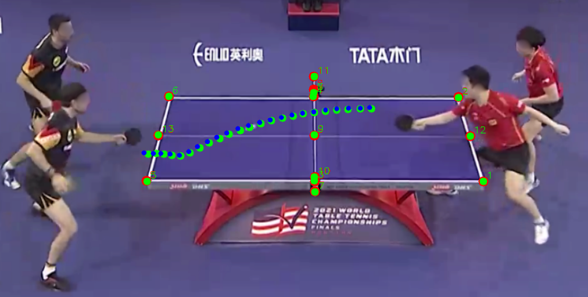
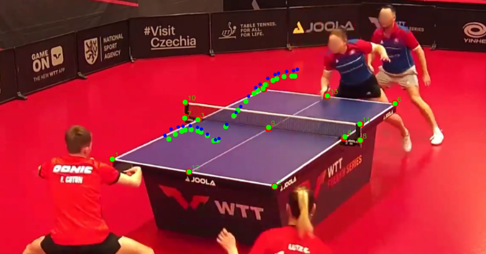
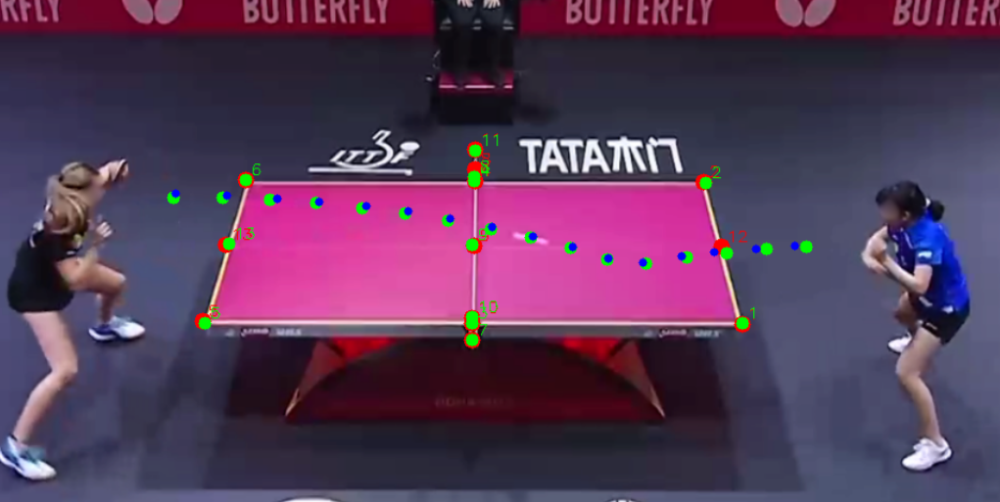
Figure 6 : Qualitative results of the full pipeline on the TTHQ dataset.
图 6：TTHQ 数据集上完整流程的定性结果。
The green dots represent the valid detections of the front-end for 2D ball positions and table keypoints.
绿点代表前端对 2D 球位置和球台关键点的有效检测。
The red dots represent the reprojected table keypoints inferred from the table geometry and camera calibration.
红点代表从球台几何形状和相机标定推断出的重投影的球台关键点。
The blue dots represent the predicted 3D ball trajectory from the back-end.
蓝点代表后端预测的 3D 球轨迹。
6 Conclusion6 结论
In this work, we have presented a comprehensive pipeline for 3D trajectory and spin estimation from monocular video.
在这项工作中，我们提出了一个用于单目视频 3D 轨迹和旋转估计的综合流程。
Our approach addresses a novel application domain by providing a solution that can accurately analyze table tennis ball motion from unconstrained, noisy broadcast footage.
我们的方法面向一个新的应用领域，能够从拍摄条件不受约束且含有噪声的比赛转播视频中，准确分析乒乓球的运动。
We solve a fundamental challenge in this domain: the lack of 3D ground truth data.
我们解决了该领域的一个根本挑战：缺乏 3D 真值数据。
The core of our innovation is a two-stage framework, which provides a clean separation between the 2D perception and 3D uplifting tasks.
我们创新的核心是一个两阶段框架，它在 2D 感知和 3D 提升任务之间提供了清晰的分离。
This modularity is a key contribution, as it allows each stage to be trained with different, readily available supervision: 2D human annotations and 3D synthetic data.
这种模块化是一个关键贡献，因为它允许每个阶段都使用不同的、易于获得的监督进行训练：2D 人类标注和 3D 合成数据。
Consequently, it eliminates the need for a unified 3D ground truth dataset.
因此，它消除了对统一 3D 真值数据集的需要。
Our comparative assessment, including extensive ablation studies, validates the superiority of our architectural choices.
包括大量消融实验在内的对比评估，验证了我们架构选择的优势。
We have explicitly shown that our custom time-proportional positional encoding and robust embedding module are essential for handling real-world artifacts like occlusions and varying frame rates.
我们已经明确表明，我们的自定义时间比例位置编码和强大的嵌入模块对于处理现实世界的伪像（例如遮挡和变化的帧速率）至关重要。
Ultimately, our work provides a practical, ready-to-use tool for sports analytics.
最终，我们的工作为体育分析提供了一个实用的、即用型的工具。
The principles of our two-stage design and our comparative methodology offer a template for similar 3D reconstruction problems in other domains where precise ground truth is a significant barrier.
我们的两阶段设计原则和比较方法为其他领域中的类似 3D 重建问题提供了模板，在这些领域中，精确的真值是一个重大障碍。
References
- [1] (2023) Token merging: your ViT but faster. In International Conference on Learning Representations, Cited by: §3.2.
- [2] (2023) Context-aware 3d object localization from single calibrated images: a study of basketballs. In Proceedings of the 6th International Workshop on Multimedia Content Analysis in Sports, MMSports ’23, pp. 49–54. Cited by: §2.
- [3] (2021) Extraction and analysis of 3d kinematic parameters of table tennis ball from a single camera. In 2020 25th International Conference on Pattern Recognition (ICPR), pp. 9468–9475. Cited by: §2.
- [4] (2020) End-to-end object detection with transformers. In European Conference on Computer Vision (ECCV), pp. 213–229. Cited by: §2.
- [5] (2009) Physics-based ball tracking and 3d trajectory reconstruction with applications to shooting location estimation in basketball video. Soft Computing 20 (3), pp. 204–216. Cited by: §2.
- [6] (2024) TrackNetV3: enhancing shuttlecock tracking with augmentations and trajectory rectification. In Proceedings of the 5th ACM International Conference on Multimedia in Asia, Cited by: §2.
- [7] (2009) ImageNet: a large-scale hierarchical image database. In 2009 IEEE Conference on Computer Vision and Pattern Recognition, pp. 248–255. Cited by: Appendix A.
- [8] (2024) SynthNet: leveraging synthetic data for 3d trajectory estimation from monocular video. In Proceedings of the 7th ACM International Workshop on Multimedia Content Analysis in Sports, pp. 51–58. Cited by: §1, §2.
- [9] (1996) A density-based algorithm for discovering clusters in large spatial databases with noise. In Proceedings of the Second International Conference on Knowledge Discovery and Data Mining, pp. 226–231. Cited by: Appendix C, §3.3.
- [10] (2025) LATTE-mv: learning to anticipate table tennis hits from monocular videos. In Proceedings of the IEEE/CVF Conference on Computer Vision and Pattern Recognition (CVPR), Cited by: §2.
- [11] (1981) Random sample consensus: a paradigm for model fitting with applications to image analysis and automated cartography. Communications of the ACM 24 (6), pp. 381–395. Cited by: §5.4.
- [12] (2024) Table tennis ball spin estimation with an event camera. In Proceedings of the IEEE/CVF Conference on Computer Vision and Pattern Recognition (CVPR) Workshops, pp. 3347–3356. Cited by: §2.
- [13] (2025) BlurBall: joint ball and motion blur estimation for table tennis ball tracking. Note: arXiv:2509.18387 External Links: 2509.18387, Link Cited by: Appendix A, Table 5, Appendix D, §2, §4.
- [14] (2023) SpinDOE: a ball spin estimation method for table tennis robot. In 2023 IEEE/RSJ International Conference on Intelligent Robots and Systems (IROS), pp. 5744–5750. Cited by: §2.
- [15] (2025) TT3D: Table tennis 3d reconstruction. In Proceedings of the IEEE/CVF Conference on Computer Vision and Pattern Recognition (CVPR) Workshops, Cited by: §2.
- [16] (2024) No bells just whistles: sports field registration by leveraging geometric properties. In Proceedings of the IEEE/CVF Conference on Computer Vision and Pattern Recognition (CVPR) Workshops, pp. 3325–3334. Cited by: §2.
- [17] (2022) Masked autoencoders are scalable vision learners. Proceedings of the IEEE/CVF Conference on Computer Vision and Pattern Recognition (CVPR), pp. 15979–15988. Cited by: Appendix A.
- [18] (2012) Ball tracking and 3d trajectory approximation with applications to tactics analysis from single-camera volleyball sequences. Multimedia Tools and Applications (MTA) 60, pp. . Cited by: §2.
- [19] (2019) TrackNet: a deep learning network for tracking high-speed and tiny objects in sports applications*. 2019 16th IEEE International Conference on Advanced Video and Signal Based Surveillance (AVSS), pp. 1–8. Cited by: §2.
- [20] (2024) Segformer++: efficient token-merging strategies for high-resolution semantic segmentation. IEEE International Conference on Multimedia Information Processing and Retrieval (MIPR). Cited by: 1st item, §2, §3.2, §3.3.
- [21] (2024) Towards learning monocular 3d object localization from 2d labels using the physical laws of motion. Proceedings of the International Conference on 3D Vision 2024 (3DV). Cited by: §2.
- [22] (2025) Towards ball spin and trajectory analysis in table tennis broadcast videos via physically grounded synthetic-to-real transfer. Proceedings of the IEEE/CVF Conference on Computer Vision and Pattern Recognition (CVPR) Workshops. Cited by: Appendix A, Appendix B, Table 5, Appendix D, §1, §2, §3.1, §3.4, §4, 1st item, §5.4, Table 3, Table 3, Table 3, Table 3, Table 3, Table 3.
- [23] (2015) Adam: a method for stochastic optimization. International Conference on Learning Representations (ICLR), pp. . Cited by: Appendix A.
- [24] (2022) MonoTrack: shuttle trajectory reconstruction from monocular badminton video. In Proceedings of the IEEE/CVF Conference on Computer Vision and Pattern Recognition (CVPR) Workshops, pp. 3513–3522. Cited by: §2.
- [25] (2022) Recognition of freely selected keypoints on human limbs. In Proceedings of the IEEE/CVF Conference on Computer Vision and Pattern Recognition (CVPR) Workshops, pp. 3530–3538. Cited by: §2.
- [26] (2022) KaliCalib: a framework for basketball court registration. In Proceedings of the 5th International ACM Workshop on Multimedia Content Analysis in Sports, MMSports ’22, pp. 111–116. Cited by: §2.
- [27] (2016) What players do with the ball: a physically constrained interaction modeling. Proceedings of the IEEE/CVF Conference on Computer Vision and Pattern Recognition (CVPR), pp. 972–981. Cited by: §2.
- [28] (2024) Event-based ball spin estimation in sports. In Proceedings of the IEEE/CVF Conference on Computer Vision and Pattern Recognition (CVPR) Workshops, pp. 3367–3375. Cited by: §2.
- [29] (2016) Stacked hourglass networks for human pose estimation. In European Conference on Computer Vision (ECCV), pp. 483–499. Cited by: §2.
- [30] (2019) Consensus-based trajectory estimation for ball detection in calibrated cameras systems. Journal of Real-Time Image Processing 16, pp. . Cited by: §2.
- [31] (2025) Where is the ball: 3D ball trajectory estimation from 2d monocular tracking. In Proceedings of the IEEE/CVF Conference on Computer Vision and Pattern Recognition (CVPR) Workshops, Cited by: §1, §2.
- [32] (2016) You only look once: unified, real-time object detection. In 2016 IEEE Conference on Computer Vision and Pattern Recognition (CVPR), pp. 779–788. Cited by: §2.
- [33] (2008) Real-time modeling of 3-d soccer ball trajectories from multiple fixed cameras. IEEE Transactions on Circuits and Systems for Video Technology 18 (3), pp. 350–362. Cited by: §2.
- [34] (2015) Faster R-CNN: towards real-time object detection with region proposal networks. In Advances in Neural Information Processing Systems (NIPS), Cited by: §2.
- [35] (2023) Rink-agnostic hockey rink registration. In Proceedings of the 6th International Workshop on Multimedia Content Analysis in Sports, MMSports ’23, pp. 73–81. Cited by: §2.
- [36] (2024) RoFormer: enhanced transformer with rotary position embedding. Neurocomputing 568, pp. 127063. External Links: ISSN 0925-2312 Cited by: Appendix B, §3.4.
- [37] (2019) Deep high-resolution representation learning for human pose estimation. In Proceedings of the IEEE/CVF Conference on Computer Vision and Pattern Recognition (CVPR), Cited by: §3.2.
- [38] (2020) TrackNetV2: efficient shuttlecock tracking network. In 2020 International Conference on Pervasive Artificial Intelligence (ICPAI), pp. 86–91. Cited by: §2.
- [39] (2023) Widely applicable strong baseline for sports ball detection and tracking. In British Machine Vision Conference (BMVC), Cited by: §2, §3.2.
- [40] (2012) MuJoCo: a physics engine for model-based control. In 2012 IEEE/RSJ International Conference on Intelligent Robots and Systems, pp. 5026–5033. Cited by: §4.
- [41] (2022) 3D ball localization from a single calibrated image. In Proceedings of the IEEE/CVF Conference on Computer Vision and Pattern Recognition (CVPR) Workshops, pp. 3472–3480. Cited by: §2.
- [42] (2016) Convolutional Pose Machines . In IEEE Conference on Computer Vision and Pattern Recognition (CVPR), Vol. , pp. 4724–4732. External Links: ISSN 1063-6919 Cited by: §2.
- [43] (2024) Multi-camera asynchronous ball localization and trajectory prediction with factor graphs and human poses. In 2024 IEEE International Conference on Robotics and Automation (ICRA), pp. 13695–13702. Cited by: §2.
- [44] (2022) ViTPose: simple vision transformer baselines for human pose estimation. In Advances in Neural Information Processing Systems, Cited by: §2.
Supplementary Material
补充材料
Appendix A Training Details附录 A 训练详情
The front-end modules are trained with a learning rate of using the Adam optimizer [ 23 ] and a batch size of .
使用 Adam 优化器 [23] 以的学习率和的批量大小对前端模块进行训练。
For ball detection, we apply random flipping, rotation, translation, cropping, and color jittering as augmentations.
对于球检测，我们应用随机翻转、旋转、平移、裁剪和颜色抖动作为增强。
For table keypoint detection, we do not use flipping, as it would change the semantics of the keypoints.
对于球台关键点检测，我们不使用翻转，因为它会改变关键点的语义。
Instead, we apply an additional random perspective transformation to simulate different camera angles.
相反，我们应用额外的随机透视变换来模拟不同的摄像机角度。
Especially for table keypoint detection, we found that augmentations are crucial to achieve generalization ability since the TTHQ dataset is diverse but the number of annotated frames is still limited.
特别是对于球台关键点检测，我们发现增强对于实现泛化能力至关重要，因为 TTHQ 数据集多种多样，但标注帧的数量仍然有限。
We save the model with the best metric on the validation set during training and use it for testing.
我们在训练期间保存验证集上具有最佳指标的模型，并将其用于测试。
Similar to 2D human pose estimation, we simply train the models to predict gaussian heatmaps centered at the ground truth ball and keypoint positions.
与 2D 人体姿态估计类似，我们简单地训练模型来预测以真值球和关键点位置为中心的高斯热图。
The ground truth heatmaps are created at a resolution of , and we use for the Gaussian.
真值热图以的分辨率创建，我们使用作为高斯分布。
Comparing the predicted and ground truth heatmaps, we use a simple loss.
比较预测热图和真值热图，我们使用简单的损失。
All evaluations are performed at a resolution of and the metric is also computed at this resolution.
所有评估均以的分辨率执行，并且指标也以此分辨率计算。
The ball detection backbones are first initialized with ImageNet [ 7 ] (Segformer++ and WASB) or MAE [ 17 ] (VitPose) weights, then pre-trained on the Blurball dataset [ 13 ] , and finally fine-tuned on the TTHQ training set.
球检测主干首先使用 ImageNet [7]（Segformer++ 和 WASB）或 MAE [17]（VitPose）权重进行初始化，然后在 Blurball 数据集 [13] 上进行预训练，最后在 TTHQ 训练集上进行微调。
The table keypoint detection backbones are also initialized similarly, but only fine-tuned on the TTHQ training set, as the Blurball dataset does not contain sufficiently diverse table keypoint annotations.
球台关键点检测主干也以类似方式初始化，但仅在 TTHQ 训练集上进行微调，因为 Blurball 数据集不包含足够多样化的球台关键点标注。
For the training of the back-end module, we stick closely to the training procedure of Kienzle et al. [ 22 ] , but we incorporate additional augmentations of the synthetic training data.
对于后端模块的训练，我们严格遵循 Kienzle 等人的训练程序。 [22]，但是我们结合了合成训练数据的额外增强。
We simulate missing detections by randomly dropping of the ball and table keypoint detections during training.
我们通过在训练期间随机丢弃球和球台关键点检测的来模拟漏检。
Moreover, we randomly sample the frame rate between and during training.
此外，我们在训练过程中随机采样和之间的帧率。
A further difference to the Kienzle et al. training procedure is that we use our extended synthetic dataset, which contains trajectories instead of and includes more diverse match scenes like serves.
与 Kienzle 等人的训练流程相比，另一个区别在于我们采用了扩展的合成数据集：轨迹数从 增至 ，并涵盖发球等更丰富的比赛情境。
In contrast to Kienzle et al. , we do not validate on the synthetic data, but instead validate on the validation set of the TTST dataset [ 22 ] .
与 Kienzle 等人不同，我们在 TTST 数据集 [22] 的验证集上进行验证，而不使用合成数据验证。
We choose the final model as compromise between the best score for spin prediction and the best m2DRE for trajectory prediction.
我们选择最终模型作为旋转预测的最佳得分和轨迹预测的最佳 m2DRE 之间的折衷。
If multiple epochs achieve the same maximum score, which happens regularly, we choose the one with the best m2DRE among them.
如果多个 epoch 达到相同的最大分数（这种情况经常发生），我们会选择其中 m2DRE 最好的一个。
To allow for a meaningful interpretation of the m2DRE metric, we evaluate all results at a resolution of , which ensures compatibility with our front-end evaluations.
为了对 m2DRE 指标进行有意义的解释，我们以的分辨率评估所有结果，这确保了与我们的前端评估的兼容性。
Our models predict the spin in the global world coordinate system, but for evaluation and extraction of the spin class, we transform the spin into the local ball coordinate system as described in [ 22 ] .
我们的模型预测全局世界坐标系中的旋转，但为了评估和提取旋转类别，我们将旋转转换为局部球坐标系，如[22]中所述。
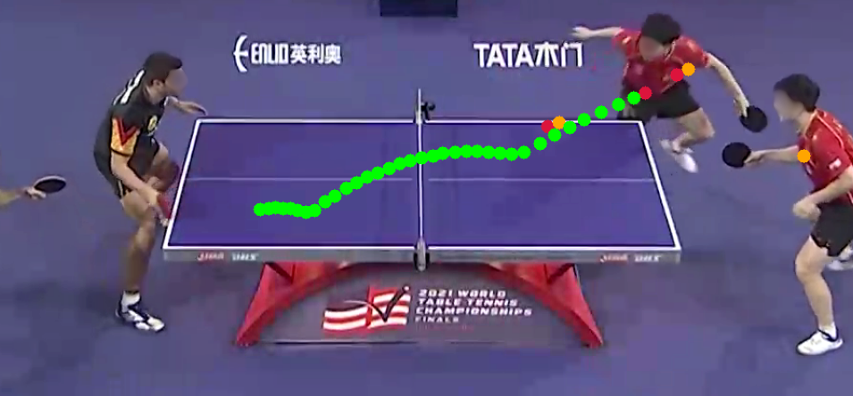
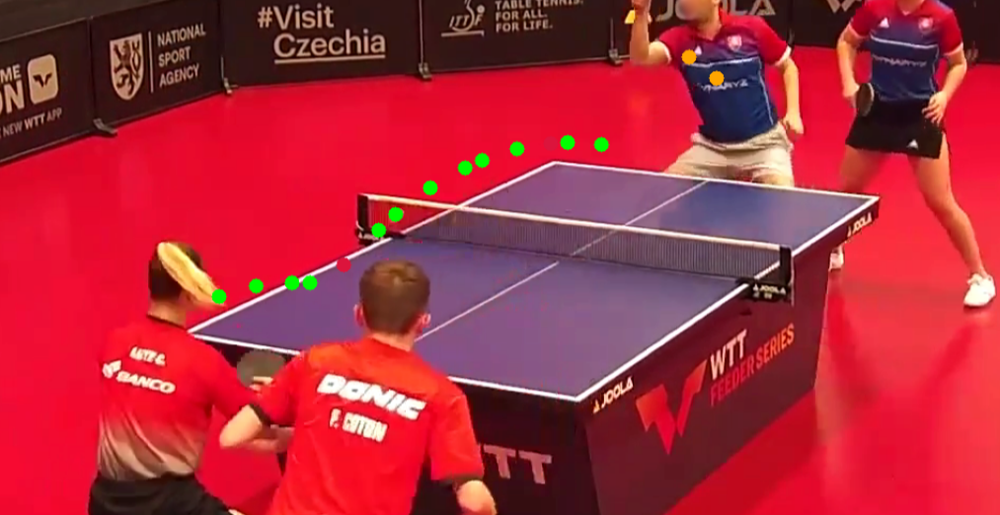
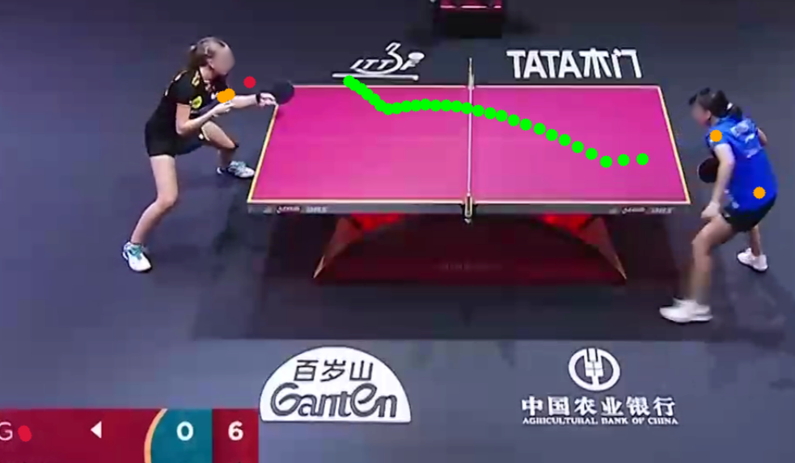
Figure 7 : Ball detection filtering.
图 7：球检测筛选。
The green dots are the valid detections of the Segformer++ (B2) model after filtering.
绿点是Segformer++（B2）模型筛选后的有效检测结果。
The crimson dots are the false positives of the Segformer++ (B2) model that were removed.
深红色的点是被删除的 Segformer++ (B2) 模型的误报。
The orange dots are the predictions of the WASB model for the filtered frames.
橙色点是 WASB 模型对筛选帧的预测。
Appendix B Architectures附录 B 架构
Front-End Architectures : To ensure a fair comparison of front-end architectures, we tuned 2 significant parameters: The input resolution and the model size.
前端架构：为了确保前端架构的公平比较，我们调整了 2 个重要参数：输入分辨率和模型大小。
We chose these parameters such that each model can be trained on a single Nvidia V100 GPU with 32 GB of memory.
我们选择这些参数，以便每个模型都可以在具有 32 GB 内存的单个 Nvidia V100 GPU 上进行训练。
Moreover, the models are tuned such that their inference speed is as similar as possible.
此外，对模型进行了调整，使其推理速度尽可能相似。
We provide the exact parameters in Table 1 and Table 2 .
我们在表 1 和表 2 中提供了确切的参数。
Back-End Architecture : We stick closely to [ 22 ] when designing the back-end architecture.
后端架构：在设计后端架构时，我们严格遵循[22]。
We use an embedding size of and transformer layers with attention heads each.
嵌入维度为 ，共使用 个 Transformer 层，每层含 个注意力头。
The Spin Head and Location Head both consist of fully connected layers with ReLU activations in between.
Spin Head 和 Location Head 均由全连接层组成，层间有 ReLU 激活。
Positional Encoding : Unlike standard transformer-based architectures that rely on a fixed positional encoding based on the token’s index, our system must handle inputs with varying time stamps and missing detections.
位置编码：与基于标准Transformer的架构依赖于基于token索引的固定位置编码不同，我们的系统必须处理具有不同时间戳和漏检的输入。
To address this, we use a custom Rotary Positional Embedding (RoPE) that encodes the exact time information of each detection into the attention mechanism.
为了解决这个问题，我们使用自定义旋转位置编码（RoPE），将每次检测的确切时间信息编码到注意力机制中。
The core of our implementation is a modification to the standard RoPE approach, where we replace the discrete position index with a highly granular, discretized timestamp :
实现的关键是修改标准 RoPE：将离散位置索引 替换为经过精细离散化的时间戳 ：
| (2) |
with .
其中 。
This discretization is so fine-grained that it effectively represents the exact time for all realistic video frame rates.
这种离散化非常细粒度，它有效地代表了所有实际视频帧速率的准确时间。
By replacing with in the original RoPE formulation [ 36 ] , we obtain the following rotation matrix
将原RoPE公式[36]中的替换为，得到如下旋转矩阵
| (3) |
where is the angle, is the feature dimension and indexes the feature dimensions.
其中 为旋转角度， 为特征维数， 为特征维度索引。
For a pair of elements from the feature vector , the rotated components are computed as:
对于特征向量中的一对元素，旋转分量计算如下：
|
|
(4) |
This time-based encoding allows the attention mechanism to inherently learn the temporal relationships between detections, regardless of their spacing in the input sequence.
这种基于时间的编码允许注意力机制固有地学习检测之间的时间关系，而不管它们在输入序列中的间距如何。
Appendix C Ball & Table Keypoint Filtering附录 C 球与球台关键点检测结果的筛选
The back-end stage of our pipeline is designed to be robust against missing ball and table keypoint detections.
我们流程的后端阶段旨在针对丢失的球和球台关键点检测具有鲁棒性。
However, it is relatively sensitive to false positive detections, which is why we apply a filtering step to the raw detections of the front-end.
然而，它对误报检测相对敏感，这就是为什么我们对前端的原始检测应用筛选步骤的原因。
For ball detections, we compare the predictions of the Segformer++ (B2) model with the predictions of the WASB model and only keep detections with a maximum distance of to a WASB detection.
对于球检测，我们将 Segformer++ (B2) 模型的预测与 WASB 模型的预测进行比较，并且仅保留与 WASB 检测最大距离为的检测。
Because the model architectures are fundamentally different, they usually do not make the same false positive detections, allowing us to filter them out with very high precision.
这些模型的架构存在根本差异，通常不会产生相同的误检，因此我们能够以很高的精确率过滤误检结果。
We illustrate this filtering step in Figure 7 for three different example trajectories in the TTHQ test set.
我们在图 7 中针对 TTHQ 测试集中的三个不同示例轨迹说明了此筛选步骤。
We use this two-model based filtering approach instead of more established filtering methods like Kalman filtering or polynomial fitting, because they fail in a significant failure case: Sometimes, the feet or paddle movements of the players are falsely detected as balls for multiple consecutive frames.
我们使用双模型筛选，而不采用卡尔曼滤波或多项式拟合等常用方法，是因为后者难以处理一种典型情况：连续多帧将球员的脚或球拍运动误检为球。
These false positive detections cannot be easily differentiated from real ball trajectories, which is why the established filtering methods fail.
这些误报检测无法轻易与真实的球轨迹区分开来，这就是所建立的筛选方法失败的原因。
However, our two-model based filtering approach is very robust against this failure case, resulting in a very high precision of the final ball detections.
然而，我们基于两个模型的筛选方法对于这种故障情况非常稳健，从而导致最终球检测的精度非常高。
For table keypoint detections, we apply a similar filtering step.
对于球台关键点检测，我们应用类似的筛选步骤。
We only keep the detections of the Segformer++ (B2) model that are within a distance of to a WASB detection.
我们只保留 Segformer++ (B2) 模型的检测，这些检测与 WASB 检测的距离在以内。
Additionally, we utilize the static nature of the table keypoints and apply the DBSCAN clustering algorithm [ 9 ] to the remaining detections of each keypoint over the entire trajectory.
此外，我们利用球台关键点的静态性质，并将 DBSCAN 聚类算法 [9] 应用于整个轨迹上每个关键点的其余检测。
The final filtered detections are then the cluster centers of the largest cluster for each keypoint.
最终筛选的检测结果是每个关键点的最大聚类的聚类中心。
This results in an extremely robust filtering of false positive detections.
这导致对误报检测的极其稳健的筛选。
We illustrate this filtering step in Figure 8 for two different example trajectories in the TTHQ test set.
我们在图 8 中针对 TTHQ 测试集中的两个不同示例轨迹说明了此筛选步骤。
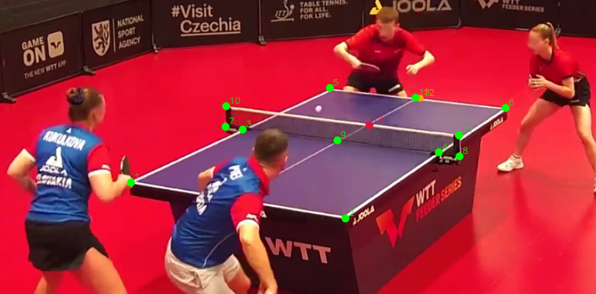
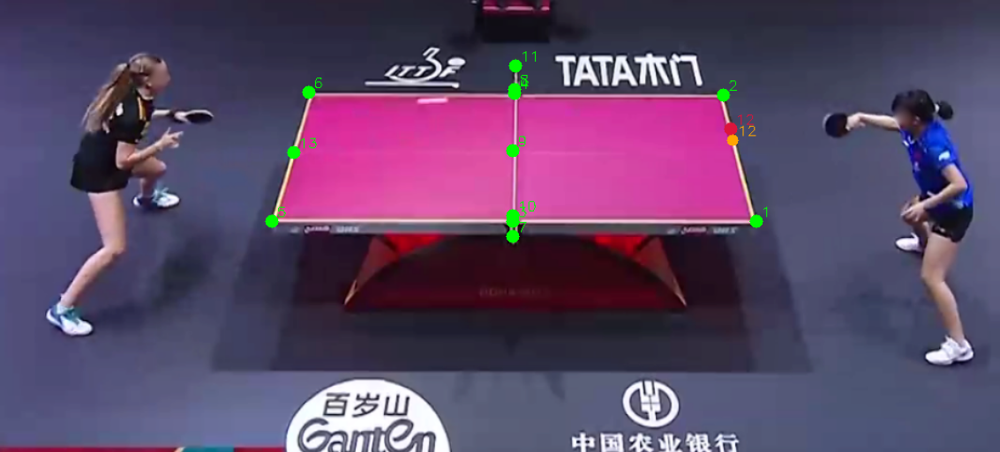
Figure 8 : Table keypoint detection filtering.
图 8：球台关键点检测筛选。
The green dots are the valid detections after filtering.
绿点是筛选后的有效检测。
The crimson dots are the false positives of the Segformer++ (B2) model that were removed.
深红色的点是被删除的 Segformer++ (B2) 模型的误报。
The orange dots are the predictions of the WASB model for the filtered frames.
橙色点是 WASB 模型对筛选帧的预测。
Appendix D Comparison of Datasets附录D 数据集比较
We provide a comparison of existing table tennis datasets in Table 5 .
我们在表 5 中提供了现有乒乓球数据集的比较。
The Blurball dataset [ 13 ] has the largest number of ball annotations, and using the provided homographies, pseudo table keypoints can be generated.
Blurball 数据集 [13] 的球位置标注最多；还可利用其提供的单应矩阵生成球台关键点的伪标注。
As the dataset is sourced from 24 different videos, the table keypoints lack diversity and are, thus, not suitable for training a robust table keypoint detection model.
由于数据集源自 24 个不同的视频，球台关键点缺乏多样性，因此不适合训练鲁棒的球台关键点检测模型。
However, since ball detection training data needs to capture a wide variety of conditions due to the dynamic nature of the ball, the Blurball dataset is still a valuable resource for training ball detection models.
然而，由于球的动态特性，球检测训练数据需要捕获各种条件，因此 Blurball 数据集仍然是训练球检测模型的宝贵资源。
Due to the low resolution of the videos, we do not use this dataset for fine-tuning, but utilize it for pre-training our ball detection models.
由于视频分辨率较低，我们不使用该数据集进行微调，而是利用它来预训练我们的球检测模型。
The TTST dataset [ 22 ] has a high resolution and provides annotations for balls, table keypoints, and spin.
TTST 数据集 [22] 具有高分辨率，并提供球、球台关键点和旋转的标注。
Because the scenes are not very diverse and the number of annotated frames is relatively low, the dataset is not suitable for training robust front-end models.
由于场景不是很多样化并且标注帧的数量相对较少，因此该数据集不适合训练鲁棒的前端模型。
However, it is still a valuable resource for validating the performance of our pipeline.
然而，它仍然是验证我们流程性能的宝贵资源。
Especially valuable are the dense annotations for each trajectory, which allow us to evaluate the performance of the back-end model independently of the front-end.
每条轨迹的密集标注尤为有价值，因为它们使我们能够独立于前端，评估后端模型的性能。
Our TTHQ dataset provides high resolution videos with a high variety of scenes and numerous annotations for balls, table keypoints, and spin.
我们的 TTHQ 数据集提供高分辨率视频，其中包含各种场景以及球、球台关键点和旋转的大量标注。
This makes it the first dataset that is suitable for training robust front-end models.
这使其成为第一个适合训练鲁棒前端模型的数据集。
Moreover, we can also utilize the dataset for the validation of the spin predictions.
此外，我们还可以利用数据集来验证旋转预测。
While the annotations are not dense like in TTST, the high variety of scenes and situations makes it an interesting benchmark for evaluating the overall performance of the full pipeline.
虽然标注不像 TTST 那样密集，但场景和情况的多样性使其成为评估整个流程整体性能的有趣基准。
| Dataset数据集 | Resolution分辨率 | # Balls# 球 | # Table Keypoints球台关键点标注数量 | # Spin Class旋转类别标注数量 |
| TTHQ (ours)TTHQ（我们的） | 9092 | 257 | 57 | |
| TTST [22]TTST [ 22 ] | 1197 | 50 | 50 | |
| Blurball [13]Blurball [13] | 50000 | 0 |
Table 5 : Comparison of table tennis datasets.
表 5：乒乓球数据集比较。
We report the video resolution, number of frames with ball annotations, number of frames with table keypoint annotations, and number of trajectories with spin class annotations.
我们报告视频分辨率、带有球标注的帧数、带有球台关键点标注的帧数以及带有旋转类标注的轨迹数。
The * indicates, that table keypoints are not annotated, but can be generated from the provided homography.
* 表示球台关键点未标注，但可以从提供的单应性生成。
However, while many frames with table annotations can be obtained this way, the variety of the frames is extremely low, because the dataset is sourced from a limited number of videos.
然而，虽然可以通过这种方式获得许多带有表格标注的帧，但帧的多样性非常低，因为数据集源自有限数量的视频。
Appendix E Reproducibility and Open Resources附录 E 可复现性与开放资源
To foster reproducibility and facilitate further research in the field, we provide our code at https://kiedani.github.io/WACV2026/ .
为了促进可重复性并促进该领域的进一步研究，我们在 https://kiedani.github.io/WACV2026/ 上提供了我们的代码。